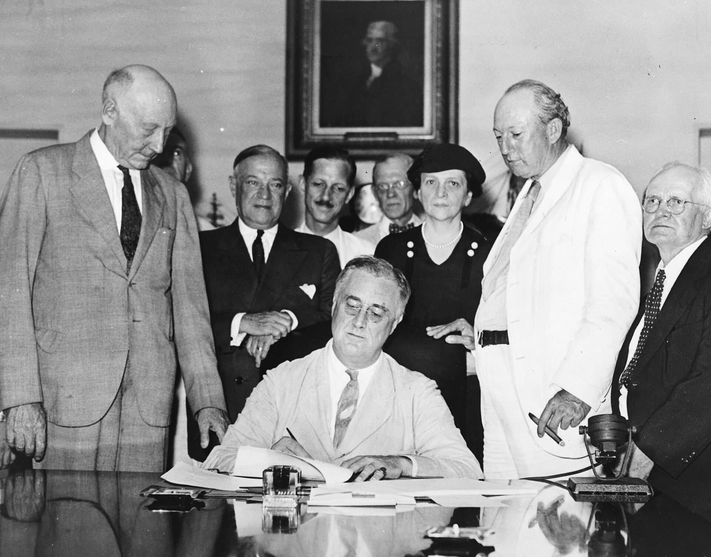

Directions: Study the photograph and the statute lines, then answer the questions.

Statute lines. From the Social Security Act of 1935, Title II, section 202(a): "Every qualified individual ... shall be entitled to receive, with respect to the period beginning on the date he attains the age of sixty-five, or on January 1, 1942, whichever is the later ... an old-age benefit (payable as nearly as practicable in equal monthly installments)." Cuts are marked with ellipses.
Background. The act also created unemployment insurance with the states and aid to dependent children. Its definition of employment did not include agricultural labor or domestic service in a private home. The same season produced the Works Progress Administration under Harry Hopkins, which employed about eight and a half million people across its life, and the Wagner Act, which created the National Labor Relations Board.
1. The benefit in the statute lines is an entitlement, not a gift. Explain what the words "shall be entitled to receive" commit the federal government to do, and name the tax that funds the benefit and who pays it.
2. A retired railroad clerk in 1940 asks why his first monthly check has not arrived although he turned sixty-five in 1939. Answer him from the statute lines.
3. A Georgia cotton picker and a Detroit auto worker are both sixty-six in 1942. Only one of them can receive the old-age benefit for his working years. Which one, and what feature of the act decides it?
4. The Detroit worker's son is fired in 1936 for signing a union card. Name the law and the agency that give him a remedy, and state the remedy the board could order.
1. What do the words commit the government to do, and what tax funds it? They commit the government to pay the monthly benefit to every qualified individual as a matter of legal right when the conditions are met, not as an act of charity or agency discretion. The benefit is funded by the payroll tax, taken from workers' wages and matched by their employers. (Blueprint 11)
2. Answer the retired clerk from the statute lines. The text starts the benefit period at sixty-five or on January 1, 1942, whichever is later. Monthly benefits under the original act were not payable before 1942, so a man who turned sixty-five in 1939 waits until the 1942 date even though the payroll tax began in 1937. (Blueprint 11)
3. Which worker can receive the benefit, and what decides it? The Detroit auto worker. The act's definition of employment excluded agricultural labor, so the cotton picker's working years built no wage record and no benefit, while factory work was covered employment. The deciding feature is the founding exclusion in the definition of employment. (Blueprint 11)
4. Name the law, the agency, and the remedy. The National Labor Relations Act, the Wagner Act of 1935, enforced by the National Labor Relations Board. Firing a worker for union activity is an unfair labor practice, and the board could order the worker reinstated with back pay. (Blueprint 12)
Teacher note. This check is formative. Question 3 is the one to read closely: students who answer it by wages or by race alone, without the definition of employment, have not yet seen how the exclusion was built into the law. Question 4 checks that the labor half of the settlement is attached to its enforcement agency.